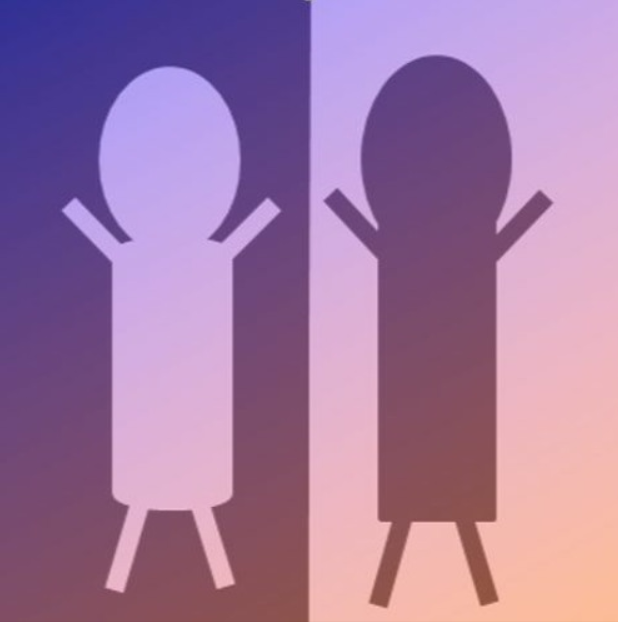

About Me
Education
- 전북대학교 통계학과 학사(부전공: 컴퓨터공학) 졸업 | 2015. 03 ~ 2021. 02
- 전북대학교 통계학과 석사 졸업 | 2021. 03 ~ 2023. 02
Experience
- 국민연금공단 빅데이터부 현장실습 | 2020. 03 ~ 2020. 06
- 지역 문화산업 융복합 데이터 전문가 과정 | 과학기술정보통신부, 한국데이터산업진흥원 | 2021. 06 ~ 2021. 08
- 에너지AI융합대학원 빅데이터 분석 특강 조교 | 전북대학교 AI에너지 융합대학원 |2021. 06 ~ 2021. 10
- SPSS를 이용한 통계자료분석 특강 조교 | 전북대학교 통계학과 | 2022. 01 ~ 2022. 02
- 데이터 준전문가 ADsP 특강 조교 | 전북대학교 통계학과 | 2022. 01 ~ 2022. 02
Publications
`-` 김영선, 강민구, 이강철 등 | 문화융복합아카이빙연구소 | 2021. 10 | 기록관리/보존 - 핵심어 추출 및 데이터 증강기법을 이용한 텍스트 분류 모델 성능 개선
`-` 이강철, 안정용 | 한국자료분석학회 | 한국자료분석학회 | 2022. 10 | 통계학Certificate
- 워드프로세서 | 대한상공회의소 | 19-19-017981 | 2019. 08. 30
- 데이터분석준전문가(ADsP) | 한국데이터진흥원 | ADsP-0223898 | 2019. 10. 01
- 사회조사분석사 2급 | 한국산업인력공단 | 19201142418N | 2019. 10. 01